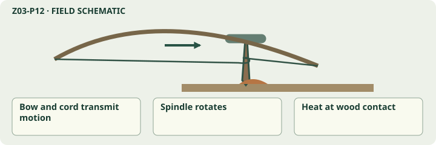

Z03-P12 · Fire and ignition
Trace heat in a bow-drill mechanism
Explain how reciprocating bow motion can create an ember at a wood interface.
When it applies · Interpretation or supervised firecraft teaching. Use the unlit assembly for the first inspection.
Equipment · Identified bow, cord, spindle, bearing block and hearth board. Any live practice needs site authorization and fire-control equipment.

Actions
- Identify the bow as the input, the cord as the motion transfer, and the spindle as the rotating part.[C12]
- Trace pressure and rotation to the spindle-to-hearth contact. That interface heats the dust; the top support controls the spindle position.[C12]
- Separate visible smoke from an ember that persists. Use a supervised demonstration to confirm the teaching sequence only where fire is authorized and controlled.[C12, C01, C02, ED]
Verify · A learner can point to the rotating part, the contact that heats the wood and the intended ember location.[C12, ED]
Stop or change course · Stop if materials or assembly are uncertain. A prolonged ignition attempt that compromises warmth or safety is a reason to switch methods.[C08, C12, ED]
Evidence and editorial notes
- C01 · Minnesota DNR · Fire Danger and Burning Restrictions
- Fire danger and burning restrictions map and links · Current Minnesota location, date and jurisdiction
Check current restrictions and local authority requirements before lighting.
Primary source · checked 2026-11-24 - C02 · USDA Forest Service / Smokey Bear · Smokey Bear’s Campfire Safety Guide
- Build your campfire; choose a location · Where campfires are currently permitted
Use an established fire ring where required or available. Protect the area from nearby combustible materials, avoid windy conditions and keep water ready.
Primary source · checked 2026-11-24 - C08 · NWS · What To Do If You're Caught in a Winter Storm
- Outside > If there is no shelter nearby · Stranded outdoors during a winter storm
Seek shelter and block wind and wet exposure. Reduce heat loss from contact with snow or ground.
Primary source · checked 2026-11-24 - C12 · NPS · Forces and Tools
- Background and Procedure > Bow Drill · Interpretive demonstration using known materials
Reciprocating motion turns a spindle against a hearth. Friction heats wood dust until it can sustain an ember.
Primary source · checked 2026-11-24
Source lineage · B008/B010 mechanisms and NPS Forces and Tools.